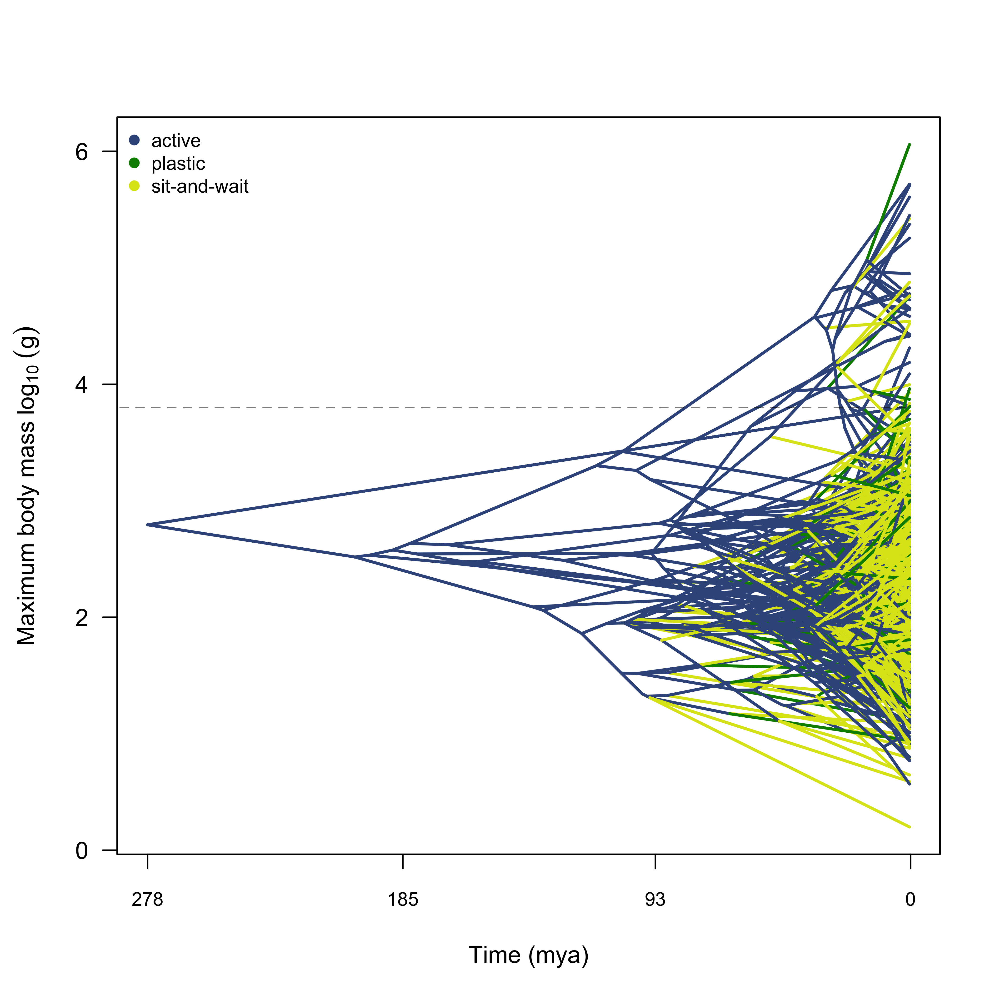
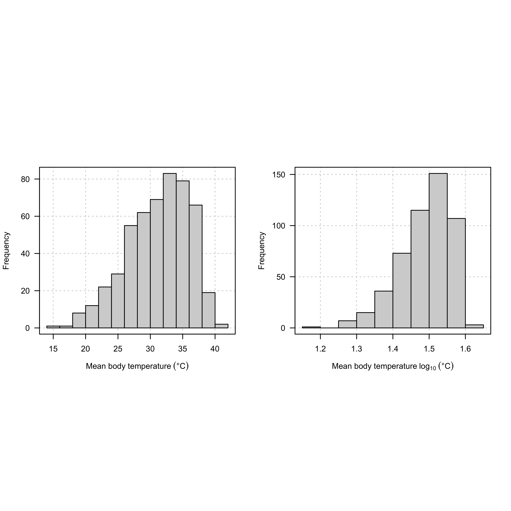
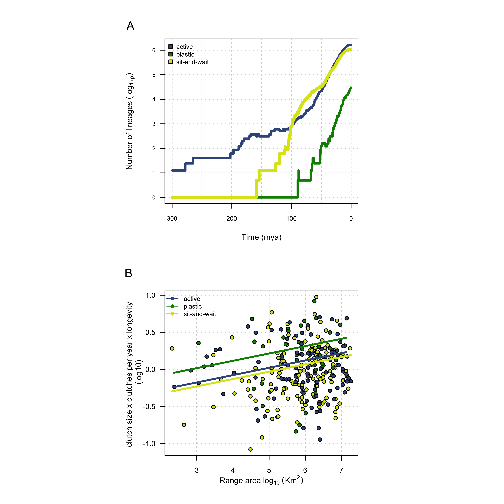

## Librarieslibrary(AICcmodavg)library(ape)library(BAMMtools)library(bayou)library(caper)library(car)library(corHMM)library(cowplot)library(diversitree)library(geiger)library(ggplotify)library(grid)library(hisse)library(lattice)library(latticeExtra)library(MuMIn)library(nlme)library(patchwork)library(plotrix)library(png)library(phytools)library(raster)library(reshape)library(rsconnect)library(scales)library(shape)library(TreeSim)library(vioplot)library(viridis)## Create the manifest.json file for posit connectrsconnect::writeManifest()## Session info and R versionsessionInfo()
> _
> platform aarch64-apple-darwin20
> arch aarch64
> os darwin20
> system aarch64, darwin20
> status
> major 4
> minor 5.2
> year 2025
> month 10
> day 31
> svn rev 88974
> language R
> version.string R version 4.5.2 (2025-10-31)
> nickname [Not] Part in a Rumble
Code
## setting seed for reproducibility##set.seed(3487593)## Loading the dataraw.data <-read.csv('data/data_Meiri-2024.csv', as.is =TRUE)str(raw.data)
> 'data.frame': 12060 obs. of 28 variables:
> $ Species : chr "Ablepharus alaicus" "Ablepharus anatolicus" "Ablepharus bivittatus" "Ablepharus budaki" ...
> $ Order : chr "Squamata" "Squamata" "Squamata" "Squamata" ...
> $ Family : chr "Scincidae" "Scincidae" "Scincidae" "Scincidae" ...
> $ Genus : chr "Ablepharus" "Ablepharus" "Ablepharus" "Ablepharus" ...
> $ Main.biogeographic.region : chr "Saharo-Sindian" "Saharo-Sindian" "Saharo-Sindian" "Saharo-Sindian" ...
> $ Microhabitat : chr "Saxicolous/Terrestrial" "Terrestrial" "Saxicolous" "Terrestrial" ...
> $ Habitat.type : chr NA NA "Forest/Grassland/Shrubland" "Forest/Shrubland" ...
> $ Minimal.elevation..m. : int NA NA 600 0 150 NA 40 NA 222 NA ...
> $ Maximum.elevation..m. : int NA NA 2900 1700 1700 NA 3000 NA 2710 NA ...
> $ Diet : chr "Carnivorous" NA "Carnivorous" "Carnivorous" ...
> $ Active.time : chr "Diurnal" NA "Diurnal" "Diurnal" ...
> $ Foraging.mode : chr NA NA NA NA ...
> $ Maximum.Longevity..years. : num NA NA NA NA NA NA NA NA NA NA ...
> $ Maximum.body.mass..g. : num NA NA 4.4 2 3 1.5 3.9 NA 0.7 1.2 ...
> $ Maximum.female.length...SVL...mm..straight.carapace.length.for.turtles...SCL...mm. : num NA NA 56.5 36.8 44.4 NA 46 50 NA 61.8 ...
> $ Maximum.male.length...SVL...mm..straight.carapace.length.for.turtles...SCL...mm. : num NA NA NA NA NA NA NA NA NA NA ...
> $ Maximum.juvenile.length...SVL...mm..straight.carapace.length.for.turtles...SCL...mm.: num 22.1 NA 18.5 NA NA NA 17.5 21.5 14.5 NA ...
> $ Hatchling.neonate.mass..g. : num NA NA NA NA NA NA NA NA NA NA ...
> $ Reproductive.mode : chr "viviparous" NA "oviparous" "oviparous" ...
> $ Mean.number.of.offspring.per.litter.or.number.of.eggs.per.clutch : num NA NA 4 3.5 3.5 4.5 4.5 NA 1.5 3 ...
> $ Smallest.clutch.size : num 2 NA 2 2 3 NA 1 NA 1 1 ...
> $ Largest.clutch.size : int 7 NA 5 5 4 NA 8 NA 2 4 ...
> $ Number.of.litters.or.clutches.produced.per.year : num NA NA NA NA NA NA NA NA NA NA ...
> $ Egg.length..mm. : chr "No" NA NA NA ...
> $ Egg.width..mm. : chr "No" NA NA NA ...
> $ Mean.Tb : num NA NA NA NA NA NA NA NA NA 27.5 ...
> $ Minimum.Tb : num NA NA NA NA NA NA NA NA NA NA ...
> $ Maximum.Tb : num NA NA NA NA NA NA NA NA NA NA ...
colnames(range.data)[7] <-"area"area <- range.data[c(1, 7)]lizard.tree <-read.tree('data/zheng-wiens2016-tree.tre')## Checking out the variablesunique(raw.data$Foraging.mode)
> 'data.frame': 1806 obs. of 28 variables:
> $ Species : chr "Ablepharus sikimmensis" "Abronia gadovii" "Abronia juarezi" "Abronia monticola" ...
> $ Order : chr "Squamata" "Squamata" "Squamata" "Squamata" ...
> $ Family : chr "Scincidae" "Anguidae" "Anguidae" "Anguidae" ...
> $ Genus : chr "Ablepharus" "Abronia" "Abronia" "Abronia" ...
> $ Main.biogeographic.region : chr "Oriental" "Neotropic" "Neotropic" "Neotropic" ...
> $ Microhabitat : chr "Terrestrial" "Arboreal/Terrestrial" "Terrestrial" "Terrestrial" ...
> $ Habitat.type : chr NA NA NA NA ...
> $ Minimal.elevation..m. : int NA NA NA NA 120 0 2000 NA 150 0 ...
> $ Maximum.elevation..m. : int NA NA NA NA 2410 3000 3000 NA 560 1050 ...
> $ Diet : chr "Carnivorous" "Carnivorous" "Carnivorous" "Carnivorous" ...
> $ Active.time : chr "Diurnal" NA "Diurnal" "Diurnal" ...
> $ Foraging.mode : chr "active" "active" "active" "sit-and-wait" ...
> $ Maximum.Longevity..years. : num NA NA NA NA NA 10.9 NA NA 4.6 NA ...
> $ Maximum.body.mass..g. : num NA NA NA NA 47.9 ...
> $ Maximum.female.length...SVL...mm..straight.carapace.length.for.turtles...SCL...mm. : num 51.4 83.6 70.1 74.5 94.5 ...
> $ Maximum.male.length...SVL...mm..straight.carapace.length.for.turtles...SCL...mm. : num NA NA NA NA NA NA NA 235 NA NA ...
> $ Maximum.juvenile.length...SVL...mm..straight.carapace.length.for.turtles...SCL...mm.: num 19 28.7 25 25 31 34 NA NA 25 NA ...
> $ Hatchling.neonate.mass..g. : num NA NA NA NA NA NA NA 10.3 0.6 NA ...
> $ Reproductive.mode : chr "oviparous" "viviparous" "viviparous" "viviparous" ...
> $ Mean.number.of.offspring.per.litter.or.number.of.eggs.per.clutch : num 5 NA NA NA 6.4 11.4 NA 3.5 4.9 4 ...
> $ Smallest.clutch.size : num 2 2 3 2 3 1 NA 4 3 2 ...
> $ Largest.clutch.size : int 8 12 3 10 10 17 NA 9 8 6 ...
> $ Number.of.litters.or.clutches.produced.per.year : num NA NA NA NA NA 1 NA NA 1 NA ...
> $ Egg.length..mm. : chr NA "No" "No" "No" ...
> $ Egg.width..mm. : chr NA "No" "No" "No" ...
> $ Mean.Tb : num 29 NA NA 23.7 NA 39.9 29 NA 33.6 NA ...
> $ Minimum.Tb : num NA NA NA NA NA NA NA NA NA NA ...
> $ Maximum.Tb : num NA NA NA NA NA NA NA NA NA NA ...
Code
dim(filt.data)
> [1] 1806 28
Code
unique(filt.data$Foraging.mode)
> [1] "active" "sit-and-wait" "plastic"
Code
## How many species do we have within each## foraging behavior category?tapply(X = filt.data$Species,INDEX =list(filt.data$Foraging.mode), length)
> active plastic sit-and-wait
> 1136 104 566
Code
## How many species with data of body mass do we have## within each foraging behavior category?((bd.mass <-tapply(X = filt.data$Maximum.body.mass..g.,INDEX =list(filt.data$Foraging.mode),FUN =function(X) length(na.omit(X)))))
> active plastic sit-and-wait
> 1061 103 545
Code
## How many species with data of Mean.Tb do we have## within each foraging behavior category?((mean.tb <-tapply(X = filt.data$Mean.Tb,INDEX =list(filt.data$Foraging.mode),FUN =function(X) length(na.omit(X)))))
> active plastic sit-and-wait
> 330 69 280
Code
## Merging data of lizard rangesnames(area)[1] <-'Species'merg.data <-merge(filt.data, area, by ='Species')str(merg.data)
> 'data.frame': 1549 obs. of 29 variables:
> $ Species : chr "Abronia taeniata" "Acanthocercus atricollis" "Acanthocercus yemensis" "Acanthochelys pallidipectoris" ...
> $ Order : chr "Squamata" "Squamata" "Squamata" "Testudines" ...
> $ Family : chr "Anguidae" "Agamidae" "Agamidae" "Chelidae" ...
> $ Genus : chr "Abronia" "Acanthocercus" "Acanthocercus" "Acanthochelys" ...
> $ Main.biogeographic.region : chr "Neotropic" "Afrotropic" "Saharo-Sindian" "Neotropic" ...
> $ Microhabitat : chr "Arboreal" "Arboreal" "Saxicolous" "Aquatic/Terrestrial" ...
> $ Habitat.type : chr "Forest" "Savanna" "Rocky" "Grassland/Wetlands" ...
> $ Minimal.elevation..m. : int 120 0 2000 NA 150 0 -385 0 0 57 ...
> $ Maximum.elevation..m. : int 2410 3000 3000 NA 560 1050 2000 300 2500 777 ...
> $ Diet : chr "Carnivorous" "Carnivorous" "Omnivorous" "Carnivorous" ...
> $ Active.time : chr NA "Diurnal" "Diurnal" NA ...
> $ Foraging.mode : chr "active" "sit-and-wait" "sit-and-wait" "active" ...
> $ Maximum.Longevity..years. : num NA 10.9 NA NA 4.6 NA 9 NA 2.1 NA ...
> $ Maximum.body.mass..g. : num 47.9 177.8 87.1 872 16.6 ...
> $ Maximum.female.length...SVL...mm..straight.carapace.length.for.turtles...SCL...mm. : num 94.5 113.9 95 295 64.9 ...
> $ Maximum.male.length...SVL...mm..straight.carapace.length.for.turtles...SCL...mm. : num NA NA NA 235 NA NA NA NA NA NA ...
> $ Maximum.juvenile.length...SVL...mm..straight.carapace.length.for.turtles...SCL...mm.: num 31 34 NA NA 25 NA 26.5 26 29 NA ...
> $ Hatchling.neonate.mass..g. : num NA NA NA 10.3 0.6 NA 0.6 NA NA NA ...
> $ Reproductive.mode : chr "viviparous" "oviparous" "oviparous" "oviparous" ...
> $ Mean.number.of.offspring.per.litter.or.number.of.eggs.per.clutch : num 6.4 11.4 NA 3.5 4.9 4 4.3 5.5 3.7 NA ...
> $ Smallest.clutch.size : num 3 1 NA 4 3 2 1 1 1 NA ...
> $ Largest.clutch.size : int 10 17 NA 9 8 6 8 10 8 NA ...
> $ Number.of.litters.or.clutches.produced.per.year : num NA 1 NA NA 1 NA 1 NA 1.5 NA ...
> $ Egg.length..mm. : chr "No" NA NA "31.8" ...
> $ Egg.width..mm. : chr "No" NA NA "30.8" ...
> $ Mean.Tb : num NA 39.9 29 NA 33.6 NA 36.2 NA 34.8 NA ...
> $ Minimum.Tb : num NA NA NA NA NA NA NA NA NA NA ...
> $ Maximum.Tb : num NA NA NA NA NA NA NA NA NA NA ...
> $ area : num 7721 5952738 44638 321158 5380 ...
Code
## How many species with distribution range##data do we have within each foraging behavior category?((range.area <-tapply(X = merg.data$area,INDEX =list(merg.data$Foraging.mode),FUN =function(X) length(na.omit(X)))))
## now let's do our stochastic mappinglizard.maps.ard <-make.simmap(pruned.tree, map.spp, model ="ARD",nsim =5, pi ='estimated', Q ='mcmc')lizard.maps.sym <-make.simmap(pruned.tree, pi ='estimated', map.spp, Q ='mcmc', model ="SYM",nsim =5)lizard.maps.er <-make.simmap(pruned.tree, map.spp, pi ='estimated',Q ='mcmc', model ="ER",nsim =5)## model selection based on AICdata.frame(Model =c("modER", "modARD", "modSYM"),AIC =c(AIC(lizard.maps.er), AIC(lizard.maps.ard),AIC(lizard.maps.sym)), stringsAsFactors =FALSE)## increasing the simulationslizard.maps.sym <-make.simmap(pruned.tree, map.spp, model ="SYM", nsim =100000)save(lizard.maps.sym, file ="stochastic.map.sym.RData")
Code
## convert to tree with unbranching nodesidx <-sample(1:length(lizard.maps.sym), 1)tt <-map.to.singleton(lizard.maps.sym[[idx]])## compute all node heightsH <-nodeHeights(tt)## pull out heights all all eventsh <-max(H)-branching.times(tt)## get the states at each eventss <-setNames(as.factor(names(tt$edge.length)), tt$edge[ , 2])## create a matrix to count lineageslineages <-matrix(0, length(h), length(levels(as.factor(map.spp))),dimnames =list(names(h), levels(as.factor(map.spp))))## count themfor(i in1:length(h)){ ii <-intersect(which(h[i]>H[ , 1]), which(h[i]<=H[ , 2])) lineages[i,] <-summary(ss[ii])}## sort by eventii <-order(h)times <- h[ii]lineages <- lineages[ii, ]##png('./imgs/figure4.png', width = 7, height = 7, units = 'in',## res = 360)##pdf('./imgs/figuer1.pdf')layout(matrix(c(0, 0, 0, 0,1, 1, 2, 2,1, 1, 2, 2,0, 0, 0, 0), nrow =4, ncol =4, byrow =TRUE))## create plot areaplot(NA, xlim =range(times), ylim =c(0, max(lineages)),ylab ="Lineages", bty ="n", las =1,xlab ="Time (mya)", axes =FALSE)## add lineages through time for each typelines(times, lineages[ , 1], type ="s",lwd =3, col ='#39568CFF')lines(times, lineages[ , 2], type ="s",col ='green4', lwd =3)lines(times, lineages[ , 3], type ="s",col ='#DCE319FF', lwd =4)## superimpose treecols <-setNames(make.transparent(c('#39568CFF', 'green4', '#DCE319FF'), 0.5),levels(as.factor(map.spp)))plot(lizard.maps.sym[[idx]], cols, ftype ="off", add =TRUE,lwd =1, mar =c(5.1, 4.1, 4.1, 2.1))obj<-markChanges(lizard.maps.sym[[idx]], plot =FALSE)for(i in1:nrow(obj)) lines(rep(obj[i,"x"] , 2), c(0, obj[i,"y"]),lty ="dotted", col =make.transparent("grey", 0.8))legend("topleft", levels(as.factor(map.spp)), pch =22,pt.bg =c('#39568CFF', 'green4', '#DCE319FF'),pt.cex =1.2 , cex =0.8, bty ="n")axis(1, at =round(seq(0, max(nodeHeights(lizard.maps.sym[[idx]])),length.out =4), 0),label =round(seq(max(nodeHeights(lizard.maps.sym[[idx]])), 0,length.out =4), 0), cex.axis =0.8)axis(2, las =1, cex.axis =0.8)mtext('A', side =2, at =1200, las =2, line =3)## create plot areapar(mgp =c(2.5, 1, 0))plot(NA, xlim =range(times), ylim =c(0, max(log1p(lineages))),ylab =expression("Number of lineages"~(log[1+p])), bty ="n", las =1,xlab ="Time (mya)", axes =FALSE)grid()## add lineages through time for each typelines(times, log1p(lineages[ , 1]), type ="s",lwd =3, col ='#39568CFF')lines(times, log1p(lineages[ , 2]), type ="s",col ='green4', lwd =3)lines(times, log1p(lineages[ , 3]), type ="s",col ='#DCE319FF', lwd =4)legend("topleft", levels(as.factor(map.spp)),pch =22, pt.bg =c('#39568CFF', 'green4', '#DCE319FF'),pt.cex =1.2 , cex =0.8, bty ="n")axis(1, at =round(seq(0, max(nodeHeights(lizard.maps.sym[[idx]])),length.out =4), 0),label =round(seq(max(nodeHeights(lizard.maps.sym[[idx]])), 0,length.out =4), 0), cex.axis =0.8)axis(2, las =1, cex.axis =0.8)mtext('A', side =2, at =7.3, las =2, line =3)box()
Code
##dev.off()
Code
## setting up data for MuSEE model## acording to Reptile database, there are## currently 11989 species of squamates((sampling.f <-as.numeric(tapply(X = pruned.data$Species,INDEX =list(pruned.data$Foraging.mode), length)/11989)))
## writing down our MuSSE likelihood functionpruned.tree <-force.ultrametric(pruned.tree)is.ultrametric(pruned.tree)((lik.musse <-make.musse(pruned.tree, forg, 3, sampling.f = sampling.f)))p <-starting.point.musse(pruned.tree, k =3)pobj <-birthdeath(pruned.tree)bd(obj)lik.null<-constrain(lik.musse,lambda2 ~ lambda1, lambda3 ~ lambda1, mu2 ~ mu1, mu3 ~ mu1, q13 ~0, q21 ~ q12, q23 ~ q12, q31 ~0, q32 ~ q12)lik.null## fitting a model - the “null” model in a sense - in which## all birth & death rates are equal between states,## the character evolution is ordered (that is 1<->2<->3),## and there is a single character transition ratep[argnames(lik.null)]## fit the modelfit.null <-find.mle(lik.null, x.init = p[argnames(lik.null)])fit.null## most complex model in which all rates of speciation## & extinction depend on the character state for our## multi-state characterfit.full <-find.mle(lik.musse, x.init = p[argnames(lik.musse)])fit.full## model in which only the speciation rate (λ) varies between states## create likelihood functionlik.lambda <-constrain(lik.musse, mu2 ~ mu1, mu3 ~ mu1, q21 ~ q12, q23 ~ q12, q32 ~ q12)## fit itfit.lambda <-find.mle(lik.lambda, p[argnames(lik.lambda)])fit.lambda## model in which extinction rate (μ) varieslik.mu <-constrain(lik.musse, lambda2 ~ lambda1, lambda3 ~ lambda1, q13 ~0, q21 ~ q12, q23 ~ q12, q31 ~0, q32 ~ q12)fit.mu <-find.mle(lik.mu, p[argnames(lik.mu)])fit.mu## a model in which λ & μ vary, but in which## character transitions are orderedlik.lambda.mu <-constrain(lik.musse, q13 ~0, q21 ~ q12, q23 ~ q12, q31 ~0, q32 ~ q12)fit.lambda.mu <-find.mle(lik.lambda.mu, p[argnames(lik.lambda.mu)])fit.lambda.mu## a model in which λ & μ are constant,## but in which the transition process is## full flexible (i.e., unordered)lik.unordered <-constrain(lik.musse, lambda2 ~ lambda1, lambda3 ~ lambda1, mu2 ~ mu1, mu3 ~ mu1)fit.unordered <-find.mle(lik.unordered, p[argnames(lik.unordered)])fit.unordered## comparing our fitted modelsAnovaResults <-anova(fit.null, all.different = fit.full, free.lambda = fit.lambda, free.mu = fit.mu, free.lambda.mu = fit.lambda.mu, free.q = fit.unordered)save(AnovaResults, file ='anova-models.RData')aicw(setNames(AnovaResults$AIC,rownames(AnovaResults)))coef(fit.full)## Bayesian mcmc to get posterior probability distributionsprior <-make.prior.exponential(1/2)## because of the type of MCMC used by diversitree,## is to set a control parameter w. This parameter## affects how many function evaluations are required## between updates to the MCMC chain; however we need## to do some preliminary sampling from the posterior## distribution to set itprelim <-mcmc(lik.musse, fit.full$par, nsteps =100,prior = prior, w =1, print.every =0)head(prelim)## Fitzjohn recommends setting ww <-diff(sapply(prelim[2:(ncol(prelim)-1)], quantile, c(0.05, 0.95)))w## running the mcmcmcmc.fit.full <-mcmc(lik.musse, p[colnames(w)],nsteps =1e5, prior = prior,w = w, print.every =1000)save(mcmc.fit.full, file ="mcmc.fit.full.RData")
Code
pruned.tree <-force.ultrametric(pruned.tree)is.ultrametric(pruned.tree)## set up MuHISSE model## multiHiSSE allows multiple states (0, 1, ..., N) and hidden states (A, B, ...)## For 3 states (0,1,2) and 2 hidden states (A,B), the states are:## 0A, 1A, 2A, 0B, 1B, 2Bpruned.data$Foraging.mode <-as.character(pruned.data$Foraging.mode)pruned.data$Foraging.mode[pruned.data$Foraging.mode =='active'] <-0pruned.data$Foraging.mode[pruned.data$Foraging.mode =='plastic'] <-1pruned.data$Foraging.mode[pruned.data$Foraging.mode =='sit-and-wait'] <-2# recode into two binary columnspruned.data$Char1 <-ifelse(pruned.data$Foraging.mode ==2, 1, 0)pruned.data$Char2 <-ifelse(pruned.data$Foraging.mode ==1, 1, 0)# 3. Format exactly for MuHiSSE# MuHiSSE requires: Column 1 = Taxa, Column 2 = Character 1, Column 3 = Character 2muhisse_data <- pruned.data[ , c("Species", "Char1", "Char2")]#head(muhisse_data)## create a transition matrix for 3 states and 2 hidden states## this creates a "full" model where all transitions are possible.trans.rates <-TransMatMakerMuHiSSE(hidden.traits =1)# 2. Drop the unused '11' state combinations (State 4 and State 8 in the full matrix)# This removes state 11A and 11B from your analysis# Generate and filter the transition matrixtrans.rates <-ParDrop(trans.rates, c(4, 8))# View the final matrix to ensure 11A and 11B are isolatedprint(trans.rates)# Define Turnover (speciation + extinction) and Extinction Fraction (extinction/speciation)# Let's assume 2 hidden states, so we have 2 sets of rates (A and B).# For a 3-state model, this means we map 6 total possible states (0A, 1A, 2A, 0B, 1B, 2B)# to fewer parameters.# In this example, we test if turnover differs between states 0,1,2 within# the hidden categories.# TURNOVER VECTOR setup (Net turnover = Speciation + Extinction)# Format corresponds to: (00A, 01A, 10A, 11A, 00B, 01B, 10B, 11B)# Assign '0' to positions 4 and 8 to drop state 11turnover <-c(1, 2, 3, 0, 4, 5, 6, 0)# EXTINCTION FRACTION VECTOR setup (Eps = Extinction / Speciation)# We can estimate distinct extinction fractions or constrain them to be equal.# Let's use the same parameter layout, dropping positions 4 and 8.eps <-c(1, 2, 3, 0, 4, 5, 6, 0)# SAMPLING FRACTIONS (f)# Relative global proportion of species sampled per state combination.# If you have complete sampling, set valid states to 1 and dropped states to 0.f <-c(as.numeric(tapply(X = pruned.data$Species,INDEX =list(pruned.data$Foraging.mode), length)/11989), 0)muhisse_data <- muhisse_data[pruned.tree$tip.label, ]data.frame(tree = pruned.tree$tip.label[1:10],data =rownames(muhisse_data)[1:10])# Run the model # Ensure your tree tips exactly match the 'Species' column in your data framefit_3state_muhisse <-MuHiSSE(phy = pruned.tree, data = muhisse_data, f = f, turnover = turnover, eps = eps, hidden.states =TRUE, trans.rate = trans.rates)
Code
## likelihood profile showing how the## likelihood changed through the MCMC runplot(mcmc.fit.full$i, mcmc.fit.full$p, type ='n',xlab ='', ylab ='', las =1, axes =FALSE)grid()par(new =TRUE)plot(mcmc.fit.full$i, mcmc.fit.full$p, type ='l', xlab ='Generation',ylab ='log(L)', las =1)##png('./imgs/figure2.png', width = 7, height = 7, units = 'in',## res = 360)##pdf('./imgs/figuer2.pdf')## computing the mean of our posterior sample,## and we can also compute things like the density## or the 95% HPD interval, just as we would with## any standard Bayesian MCMCcolMeans(mcmc.fit.full)[2:ncol(mcmc.fit.full)]## speciation ratescolors <-setNames(c('#DCE319FF', 'green4', '#39568CFF'),colnames(mcmc.fit.full[ , grep('lambda', colnames(mcmc.fit.full))]))par(mar =c(7, 4, 1, 0.5), mgp =c(2.5, 1, 0))plot(NA, ylim =c(0, 30), xlim =c(0, 0.5),axes =FALSE, ylab ='', xlab ='')grid()par(new =TRUE)profiles.plot(mcmc.fit.full[ , grep('lambda', colnames(mcmc.fit.full))],col.line = colors, las =1, legend.pos =NULL,lines.on.top =FALSE)legend('topright', legend =c(expression(lambda[1]),expression(lambda[2]), expression(lambda[3])),fil = colors, bty ='n')lambda <-as.data.frame(mcmc.fit.full[ , grep('lambda', colnames(mcmc.fit.full))])str(lambda)df_long <-reshape(data = lambda, direction ="long",varying =c("lambda1", "lambda2", "lambda3"),v.names ="lambda",timevar ="foraging.mode",times =c("sit and wait", "plastic", "active"))rownames(df_long) <-1:nrow(df_long)df_long <- df_long[order(df_long$foraging.mode), ]str(df_long)colors <-setNames(c('#39568CFF', 'green4', '#DCE319FF'),unique(df_long$foraging.mode))vioplot(lambda ~ foraging.mode, data = df_long,border =NA, method ="jitter", side ="right",col ="white", las =1, axes =FALSE,xaxt ='n', yaxt ='n', ylab ='', xlab ='')grid(nx =NULL, ny =NULL,col =alpha("lightgray", 0.7), lwd =1, lty =2)par(new =TRUE)vioplot(lambda ~ foraging.mode, data = df_long,border =NA, method ="jitter", side ="right",col = colors, las =1,xlab ="Foraging behavior",ylab =expression(Speciation~rates~(lambda)))segments(x0 =1,y0 =mean(df_long$lambda[df_long$foraging.mode =="active"]),x1 =1.38,y1 =mean(df_long$lambda[df_long$foraging.mode =="active"]),lwd =2, lty =2, col ="black")text(x =1.45,y =mean(df_long$lambda[df_long$foraging.mode =="active"]),expression(mu))segments(x0 =2,y0 =mean(df_long$lambda[df_long$foraging.mode =="plastic"]),x1 =2.39,y1 =mean(df_long$lambda[df_long$foraging.mode =="plastic"]),lwd =2, lty =2, col ="black")text(x =2.45,y =mean(df_long$lambda[df_long$foraging.mode =="plastic"]),expression(mu))segments(x0 =3,y0 =mean(df_long$lambda[df_long$foraging.mode =="sit and wait"]),x1 =3.4,y1 =mean(df_long$lambda[df_long$foraging.mode =="sit and wait"]),lwd =2, lty =2, col ="black")text(x =3.45,y =mean(df_long$lambda[df_long$foraging.mode =="sit and wait"]),expression(mu))## extinction ratesu <-as.data.frame(mcmc.fit.full[ , grep('mu', colnames(mcmc.fit.full))])str(u)df_long_mu <-reshape(data = u, direction ="long",varying =c("mu1", "mu2", "mu3"),v.names ="mu",timevar ="foraging.mode",times =c("sit and wait", "plastic", "active"))rownames(df_long_mu) <-1:nrow(df_long_mu)df_long_mu <- df_long_mu[order(df_long_mu$foraging.mode), ]str(df_long_mu)vioplot(mu ~ foraging.mode, data = df_long_mu,border =NA, method ="jitter", side ="right",col ="white", las =1, axes =FALSE,xaxt ='n', yaxt ='n', ylab ='', xlab ='')grid(nx =NULL, ny =NULL,col =alpha("lightgray", 0.7), lwd =1, lty =2)par(new =TRUE)vioplot(mu ~ foraging.mode, data = df_long_mu,border =NA, method ="jitter", side ="right",col = colors, las =1,xlab ="Foraging behavior",ylab =expression(Extinction~rates~(mu)))segments(x0 =1,y0 =mean(df_long$mu[df_long$foraging.mode =="active"]),x1 =1.38,y1 =mean(df_long$mu[df_long$foraging.mode =="active"]),lwd =2, lty =2, col ="black")text(x =1.45,y =mean(df_long$mu[df_long$foraging.mode =="active"]),expression(mu))segments(x0 =2,y0 =mean(df_long$mu[df_long$foraging.mode =="plastic"]),x1 =2.39,y1 =mean(df_long$mu[df_long$foraging.mode =="plastic"]),lwd =2, lty =2, col ="black")text(x =2.45,y =mean(df_long$mu[df_long$foraging.mode =="plastic"]),expression(mu))segments(x0 =3,y0 =mean(df_long$mu[df_long$foraging.mode =="sit and wait"]),x1 =3.4,y1 =mean(df_long$mu[df_long$foraging.mode =="sit and wait"]),lwd =2, lty =2, col ="black")text(x =3.45,y =mean(df_long$mu[df_long$foraging.mode =="sit and wait"]),expression(mu))## net diversification ratesnet.div <- mcmc.fit.full[ , grep('lambda', colnames(mcmc.fit.full))]- mcmc.fit.full[ , grep('mu', colnames(mcmc.fit.full))]net_long <-reshape(data = net.div, direction ="long",varying =c("lambda1", "lambda2", "lambda3"),v.names ="lambda",timevar ="foraging.mode",times =c("sit and wait", "plastic", "active"))rownames(net_long) <-1:nrow(net_long)net_long <- net_long[order(net_long$foraging.mode), ]str(net_long)vioplot(lambda ~ foraging.mode, data = net_long,border =NA, method ="jitter", side ="right",col ="white", las =1, axes =FALSE, ylim =c(-0.1, 0.2),xaxt ='n', yaxt ='n', ylab ='', xlab ='')grid(nx =NULL, ny =NULL,col =alpha("lightgray", 0.7), lwd =1, lty =2)par(new =TRUE)vioplot(lambda ~ foraging.mode, data = net_long,border =NA, method ="jitter", side ="right",col = colors, las =1, ylim =c(-0.1, 0.2),xlab ="Foraging behavior",ylab =expression(Net~diversification))segments(x0 =1,y0 =mean(net_long$lambda[net_long$foraging.mode =="active"]),x1 =1.38,y1 =mean(net_long$lambda[net_long$foraging.mode =="active"]),lwd =2, lty =2, col ="black")text(x =1.45,y =mean(net_long$lambda[net_long$foraging.mode =="active"]),expression(mu))segments(x0 =2,y0 =mean(net_long$lambda[net_long$foraging.mode =="plastic"]),x1 =2.39,y1 =mean(net_long$lambda[net_long$foraging.mode =="plastic"]),lwd =2, lty =2, col ="black")text(x =2.45,y =mean(net_long$lambda[net_long$foraging.mode =="plastic"]),expression(mu))segments(x0 =3,y0 =mean(net_long$lambda[net_long$foraging.mode =="sit and wait"]),x1 =3.4,y1 =mean(net_long$lambda[net_long$foraging.mode =="sit and wait"]),lwd =2, lty =2, col ="black")text(x =3.45,y =mean(net_long$lambda[net_long$foraging.mode =="sit and wait"]),expression(mu))## plotting arc phylogeny for visualization##png('imgs/figure2_revised.png', width = 7, height = 7, units = 'in',## res = 360)##pdf('./imgs/figuer1.pdf')layout(matrix(c(1, 1, 1, 1, 1, 1,1, 1, 1, 1, 1, 1,1, 1, 1, 1, 1, 1,1, 1, 1, 1, 1, 1,1, 1, 1, 1, 1, 1,1, 1, 1, 1, 1, 1,2, 2, 2, 3, 3, 3,2, 2, 2, 3, 3, 3,2, 2, 2, 3, 3, 3), nrow =9, ncol =6, byrow =TRUE))cols <-setNames(c('#39568CFF', 'green4', '#DCE319FF'),levels(as.factor(map.spp)))arc_height <-0.5h <-max(nodeHeights(pruned.tree))plotSimmap(lizard.maps.sym[[1]], colors = cols,type ="arc", lwd =1, ftype ="off",arc_height =0.5, ylim =c(-0.1*h, 1.1*(1+arc_height)*h),mar =c(5, 4, 2, 3.2))labs <-seq(0, h, by =35)draw.arc(0, 0, radius = h-labs[2:length(labs)]+0.5*h,angle1 = , angle2 = pi, col =make.transparent("blue",0.2),lty ="dotted")axis(1, pos =-3.5, at = h-seq(0, h, by =35)+0.5*h,labels =seq(0, h, by =35), cex.axis =0.5, padj =-2.5)axis(1, pos =-3.5, at =-h+seq(0, h, by =35)-0.5*h,labels =seq(0, h, by =35), cex.axis =0.5, padj =-2.5)Arrows(290, 55, 302, 43, col ='red', arr.length =0.1)text(285, 65, 'G', col ='red', font =2)Arrows(-60, 300, -52, 290, col ='red', arr.length =0.1)text(-65, 310, 'I', col ='red', font =2, family ='Times New Roman')text(-300, -40, "Time (mya)", font =3)text(300, -40, "Time (mya)", font =3)legend('topleft', levels(as.factor(map.spp)), bty ="n",fill =c('#39568CFF', 'green4', '#DCE319FF'))## overlaying raster imagesgek.img <-readPNG('imgs/gecko.png', native =TRUE)rasterImage(gek.img, 445, 110, 475, 85)sci.img <-readPNG('imgs/skink.png', native =TRUE)rasterImage(sci.img, 325, 360, 365, 290)tegu.img <-readPNG('imgs/tegu.png', native =TRUE)rasterImage(tegu.img, 205, 375, 275, 450)var.img <-readPNG('imgs/komodo.png', native =TRUE)rasterImage(var.img, 10, 450, 130, 495)igu.img <-readPNG('imgs/clamy.png', native =TRUE)rasterImage(igu.img, -170, 470, -120, 435)anole.img <-readPNG('imgs/anole.png', native =TRUE)rasterImage(anole.img, -350, 360, -310, 320)boa.img <-readPNG('imgs/boa.png', native =TRUE)rasterImage(boa.img, -430, 220, -350, 320)col.img <-readPNG('imgs/colubrid.png', native =TRUE)rasterImage(col.img, -490, 90, -430, 180)mtext('A', at =-550, side =3, line =0.5)## plotting state transitions##par(mar = c(4, 7, 1, 3), cex = 0.5, mgp = c(2.8, 1, 0),## las = 1, col.lab = 'white')##for.density <- density(lizard.maps.sym)##plot(for.density, ylim = c(0, 0.3),## transition = for.density$trans[1],## colors = '#39568CFF', xlab = 'Number of transitions',## ylab = 'Relative frequency', las = 1, axes = FALSE)##plot(for.density, ylim = c(0, 0.2),## transition = for.density$trans[2],## colors = '#39568CFF', xlab = '', las = 1)##plot(for.density, ylim = c(0, 0.2),## transition = for.density$trans[4],## colors = 'green4', xlab = '', las = 1) ##plot(for.density, ylim = c(0, 0.2),## transition = for.density$trans[6],## colors = '#DCE319FF', xlab = '', las = 1) ##plot(for.density, ylim = c(0, 0.2),## transition = for.density$trans[5],## colors = '#DCE319FF', xlab = '', las = 1) #plot(for.density, ylim = c(0, 0.2),# transition = for.density$trans[3],# colors = 'green4', xlab = '', las = 1) ## Modifying axes labels## plotting state transitions##mtext('Relative frequency', at = -203, line = -4, las = 2)##mtext('B', at = -203, line = 17, las = 1)##mtext('Number of transitions', at = -45, line = -12.7, las = 1)## Speciation##par(mar = c(4, 6, 0, 1), mgp = c(2.5, 1, 0))##vioplot(lambda ~ foraging.mode, data = df_long,## border = NA, method = "jitter", side = "right",## col = "white", las = 1, axes = FALSE,## xaxt = 'n', yaxt = 'n', ylab = '', xlab = '')##grid(nx = NULL, ny = NULL,## col = alpha("lightgray", 0.7), lwd = 1, lty = 2)##par(new = TRUE)##vioplot(lambda ~ foraging.mode, data = df_long,## border = NA, method = "jitter", side = "right",## col = cols, las = 1,## xlab = "Foraging behavior",## ylab = expression(Speciation~rates~(lambda)))##stripchart(lambda ~ foraging.mode, data = df_long, vertical = TRUE,## method = "jitter", add = TRUE, pch = 20,## col = alpha(cols, 0.1),## cex = 1.3)##segments(x0 = 1,## y0 = mean(df_long$lambda[df_long$foraging.mode == "active"]),## x1 = 1.38,## y1 = mean(df_long$lambda[df_long$foraging.mode == "active"]),## lwd = 2, lty = 2, col = "black")##text(x = 1.45,## y = mean(df_long$lambda[df_long$foraging.mode == "active"]),## expression(mu))##segments(x0 = 2,## y0 = mean(df_long$lambda[df_long$foraging.mode == "plastic"]),## x1 = 2.39,## y1 = mean(df_long$lambda[df_long$foraging.mode == "plastic"]),## lwd = 2, lty = 2, col = "black")##text(x = 2.45,## y = mean(df_long$lambda[df_long$foraging.mode == "plastic"]),## expression(mu))##segments(x0 = 3,## y0 = mean(df_long$lambda[df_long$foraging.mode == "sit and wait"]),## x1 = 3.4,## y1 = mean(df_long$lambda[df_long$foraging.mode == "sit and wait"]),## lwd = 2, lty = 2, col = "black")##text(x = 3.45,## y = mean(df_long$lambda[df_long$foraging.mode == "sit and wait"]),## expression(mu))# 3. Create a clean, formal parameter plot using base R graphics# Generate a barplot representing the exact maximum likelihood estimatespar(mar =c(4, 5, 0.5, 2))mp <-barplot( model_spec,names.arg = clean_labels.spec,col =alpha(cols, 0.8),angle =45,las =2,ylab ="",xlab ="",ylim =c(min(model_spec), max(model_spec) +0.1),axes =FALSE,xaxt ="n",border =FALSE)grid()par(new =TRUE)barplot( model_spec,names.arg = clean_labels.spec,col = cols,density =c(NA, NA, NA, 30, 30, 30), # Adds shading lines to visually distinguish Environment Bangle =45,las =2,ylab =expression(paste("Speciation rate")~(mu)),xlab ="",ylim =c(min(model_spec), max(model_spec) +0.1),xaxt ="n",border =FALSE)axis(1, at = mp, c("active-A", "plastic-A", "sit-and-wait-A","active-B", "plastic-B", "sit-and-wait-B"), cex.axis =0.6)box()mtext('B', at =-1.5, line =1.2, las =1)## Net diversification##par(mar = c(4, 6, 0, 1), mgp = c(2.5, 1, 0))##vioplot(lambda ~ foraging.mode, data = net_long,## border = NA, method = "jitter", side = "right",## col = "white", las = 1, axes = FALSE,## ylim = c(-0.1, 0.2),## xaxt = 'n', yaxt = 'n', ylab = '', xlab = '')##grid(nx = NULL, ny = NULL,## col = alpha("lightgray", 0.7), lwd = 1, lty = 2)##par(new = TRUE)##vioplot(lambda ~ foraging.mode, data = net_long,## border = NA, method = "jitter", side = "right",## col = cols, las = 1,## xlab = "Foraging behavior",## ylim = c(-0.1, 0.2),## ylab = expression(Net~diversification))##segments(x0 = 1,## y0 = mean(net_long$lambda[net_long$foraging.mode == "active"]),## x1 = 1.38,## y1 = mean(net_long$lambda[net_long$foraging.mode == "active"]),## lwd = 2, lty = 2, col = "black")##text(x = 1.45,## y = mean(net_long$lambda[net_long$foraging.mode == "active"]),## expression(mu))##segments(x0 = 2,## y0 = mean(net_long$lambda[net_long$foraging.mode == "plastic"]),## x1 = 2.39,## y1 = mean(net_long$lambda[net_long$foraging.mode == "plastic"]),## lwd = 2, lty = 2, col = "black")##text(x = 2.45,## y = mean(net_long$lambda[net_long$foraging.mode == "plastic"]),## expression(mu))##segments(x0 = 3,## y0 = mean(net_long$lambda[net_long$foraging.mode == "sit and wait"]),## x1 = 3.4,## y1 = mean(net_long$lambda[net_long$foraging.mode == "sit and wait"]),## lwd = 2, lty = 2, col = "black")##text(x = 3.45,## y = mean(net_long$lambda[net_long$foraging.mode == "sit and wait"]),## expression(mu))##mtext('C', at = -0.3, side = 3, line = 2)# 3. Create a clean, formal parameter plot using base R graphics# Generate a barplot representing the exact maximum likelihood estimatespar(mar =c(4, 5, 0.5, 2))mp <-barplot( model_div.rates,names.arg = clean_labels.div.rates,col =alpha(cols, 0.8),angle =45,las =2,ylab ="",xlab ="",ylim =c(min(model_div.rates) -0.1, max(model_div.rates) +0.1),axes =FALSE,xaxt ="n",border =FALSE,)grid()par(new =TRUE)barplot( model_div.rates,names.arg = clean_labels.div.rates,col = cols,density =c(NA, NA, NA, 30, 30, 30), # Adds shading lines to visually distinguish Environment Bangle =45,las =2,ylab =expression(paste("Net diversification rate")~(r)),xlab ="",ylim =c(min(model_div.rates) -0.1, max(model_div.rates) +0.1),xaxt ="n",border =FALSE)axis(1, at = mp, c("active-A", "plastic-A", "sit-and-wait-A","active-B", "plastic-B", "sit-and-wait-B"), cex.axis =0.6)box()# Add a clean baseline line at y = 0abline(h =0, col ="black", lty =2)mtext('C', at =-1.5, line =1.2, las =1)##dev.off()## setting up the data for GLS models. We are using## the merg.data table because it contains data on species ranges
> 'data.frame': 983 obs. of 31 variables:
> $ Species : chr "Acanthocercus_atricollis" "Acanthodactylus_beershebensis" "Acanthodactylus_boskianus" "Acanthodactylus_cantoris" ...
> $ Order : chr "Squamata" "Squamata" "Squamata" "Squamata" ...
> $ Family : chr "Agamidae" "Lacertidae" "Lacertidae" "Lacertidae" ...
> $ Genus : chr "Acanthocercus" "Acanthodactylus" "Acanthodactylus" "Acanthodactylus" ...
> $ Main.biogeographic.region : chr "Afrotropic" "Saharo-Sindian" "Saharo-Sindian" "Saharo-Sindian" ...
> $ Microhabitat : chr "Arboreal" "Terrestrial" "Terrestrial" "Terrestrial" ...
> $ Habitat.type : chr "Savanna" "Shrubland" "Desert/Shrubland" "Desert/Shrubland" ...
> $ Minimal.elevation..m. : int 0 150 -385 0 0 62 NA 0 90 270 ...
> $ Maximum.elevation..m. : int 3000 560 2000 300 2500 709 NA 600 100 900 ...
> $ Diet : chr "Carnivorous" "Carnivorous" "Carnivorous" "Carnivorous" ...
> $ Active.time : chr "Diurnal" "Diurnal" "Diurnal" "Diurnal" ...
> $ Foraging.mode : chr "sit-and-wait" "active" "active" "active" ...
> $ Maximum.Longevity..years. : num 10.9 4.6 9 NA 2.1 NA NA NA NA 4 ...
> $ Maximum.body.mass..g. : num 177.8 16.6 19.5 19.1 13.8 ...
> $ Maximum.female.length...SVL...mm..straight.carapace.length.for.turtles...SCL...mm. : num 113.9 64.9 60.1 48 68.6 ...
> $ Maximum.male.length...SVL...mm..straight.carapace.length.for.turtles...SCL...mm. : num NA NA NA NA NA NA NA NA NA NA ...
> $ Maximum.juvenile.length...SVL...mm..straight.carapace.length.for.turtles...SCL...mm.: num 34 25 26.5 26 29 NA NA NA NA 30 ...
> $ Hatchling.neonate.mass..g. : num NA 0.6 0.6 NA NA NA NA NA NA NA ...
> $ Reproductive.mode : chr "oviparous" "oviparous" "oviparous" "oviparous" ...
> $ Mean.number.of.offspring.per.litter.or.number.of.eggs.per.clutch : num 11.4 4.9 4.3 5.5 3.7 NA 3.3 NA 4 3.7 ...
> $ Smallest.clutch.size : num 1 3 1 1 1 NA 2 NA 4 2 ...
> $ Largest.clutch.size : int 17 8 8 10 8 NA 4 NA 4 7 ...
> $ Number.of.litters.or.clutches.produced.per.year : num 1 1 1 NA 1.5 NA NA NA NA 4 ...
> $ Egg.length..mm. : chr NA NA NA NA ...
> $ Egg.width..mm. : chr NA NA NA NA ...
> $ Mean.Tb : num 39.9 33.6 36.2 NA 34.8 NA NA NA 35.1 35.3 ...
> $ Minimum.Tb : num NA NA NA NA NA NA NA NA NA NA ...
> $ Maximum.Tb : num NA NA NA NA NA NA NA NA NA NA ...
> $ area : num 5952738 5380 15821918 1418032 1030142 ...
> $ rep.output : num 11.4 4.9 4.3 NA 5.55 NA NA NA NA 14.8 ...
> $ lifetime.rep.output : num 124.3 22.5 38.7 NA 11.7 ...
Code
layout(matrix(c(0, 0, 0, 0,1, 1, 2, 2,1, 1, 2, 2,0, 0, 0, 0), nrow =4,ncol =4, byrow =TRUE))hist(na.omit(pruned.data.mrg$Maximum.body.mass..g.),main ='', las =1, border ='white', col ='white',axes =FALSE, xlab ='', ylab ='')grid()par(new =TRUE)hist(na.omit(pruned.data.mrg$Maximum.body.mass..g.),main ='', las =1, xlab =expression('Body mass'~(g)))box()hist(na.omit(log10(pruned.data.mrg$Maximum.body.mass..g.)+1),main ='', las =1, border ='white', col ='white',axes =FALSE, xlab ='', ylab ='')grid()par(new =TRUE)hist(na.omit(log10(pruned.data.mrg$Maximum.body.mass..g.)+1),main ='', las =1, xlab =expression('Body mass'~log[10]+1~(g)))box()

Code
## transforming the datapruned.data.mrg$Maximum.body.mass..g. <-log10(pruned.data.mrg$Maximum.body.mass..g.)+1layout(matrix(c(0, 0, 0, 0,1, 1, 2, 2,1, 1, 2, 2,0, 0, 0, 0), nrow =4,ncol =4, byrow =TRUE))hist(na.omit(pruned.data.mrg$Mean.Tb), main ='',las =1, border ='white', col ='white',axes =FALSE, xlab ='', ylab ='')grid()par(new =TRUE)hist(na.omit(pruned.data.mrg$Mean.Tb), main ='',las =1, xlab =expression('Mean body temperature'~('\u00B0C')))box()hist(na.omit(log10(pruned.data.mrg$Mean.Tb)), main ='',las =1, border ='white', col ='white',axes =FALSE, xlab ='', ylab ='')grid()par(new =TRUE)hist(na.omit(log10(pruned.data.mrg$Mean.Tb)),main ='', las =1,xlab =expression('Mean body temperature'~log[10]~('\u00B0C')))box()

Code
layout(matrix(c(0, 0, 0, 0,1, 1, 2, 2,1, 1, 2, 2,0, 0, 0, 0), nrow =4,ncol =4, byrow =TRUE))hist(na.omit(pruned.data.mrg$area),main ='', las =1, border ='white',col ='white', axes =FALSE, xlab ='', ylab ='')grid()par(new =TRUE)hist(na.omit(pruned.data.mrg$area), main ='',las =1, xlab =expression('Area of geographic range'~(km^2)))box()hist(na.omit(log10(pruned.data.mrg$area)),main ='', las =1, border ='white',col ='white', axes =FALSE, xlab ='', ylab ='')grid()par(new =TRUE)hist(na.omit(log10(pruned.data.mrg$area)),main ='', las =1,xlab =expression('Area of geographic range'~log[10]~(km^2)))box()
## transforming datapruned.data.mrg$lifetime.rep.output <-log10(pruned.data.mrg$lifetime.rep.output)names(pruned.data.mrg)[c(14, 26, 29, 30, 31)] <-c(expression('Maximum body mass'),expression('Mean body temperature'),expression('Area of geographic range'),'Annual reproductive \n output','Lifetime reproductive \n output')## looking at broad patterns in the data firstplot(pruned.data.mrg[c(14, 26, 29, 30, 31)], pch =16, las =1)
Code
## fitting phylogenetic generalized least square modelstapply(X = pruned.data.mrg$'Maximum body mass',INDEX =list(pruned.data.mrg$Foraging.mode),FUN =function(X) length(na.omit(X)))
> active plastic sit-and-wait
> 483 87 413
Code
tapply(X = pruned.data.mrg$'Mean body temperature',INDEX =list(pruned.data.mrg$Foraging.mode),FUN =function(X) length(na.omit(X)))
> active plastic sit-and-wait
> 207 63 238
Code
tapply(X = pruned.data.mrg$'Area of geographic range',INDEX =list(pruned.data.mrg$Foraging.mode),FUN =function(X) length(na.omit(X)))
> Foraging.mode body.mass
> Acanthocercus_atricollis sit-and-wait 3.249932
> Acanthodactylus_beershebensis active 2.220108
> Acanthodactylus_boskianus active 2.290035
> Acanthodactylus_cantoris active 2.281033
> Acanthodactylus_erythrurus plastic 2.139879
> Acanthodactylus_gongrorhynchatus active 1.812913
> Area of geographic range
> Acanthocercus_atricollis 6.774717
> Acanthodactylus_beershebensis 3.730783
> Acanthodactylus_boskianus 7.199259
> Acanthodactylus_cantoris 6.151686
> Acanthodactylus_erythrurus 6.012897
> Acanthodactylus_gongrorhynchatus 5.120813
Code
## looking at body size landscape before running PGLStree <-reorder(tree.mass.range, "postorder")tree## error assumedMEvar <-0.1## data of body massdat <-setNames(pruned.mass.range$body.mass,rownames(pruned.mass.range))dat <- dat +rnorm(length(dat), 0, sqrt(MEvar))
Code
## Defining prior. Prior for the maximum number## of shifts was set as half of the number of branch lengthspriorOU <-make.prior(tree,dists =list(dalpha ="dhalfcauchy",dsig2 ="dhalfcauchy",dk ="cdpois", dtheta ="dnorm"),param =list(dalpha =list(scale =0.1),dsig2 =list(scale =0.1),dk =list(lambda =10,kmax =length(tree$edge.length)/2),dsb =list(bmax =1, prob =1),dtheta =list(mean =mean(dat),sd =1.5*sd(dat))))## to run our MCMC, we have to initiate## the MCMC chain with some starting valuesstartpars <-priorSim(priorOU, tree, plot =TRUE)$pars[[1]]priorOU(startpars)## let's take what we have and put it into## the function bayou.makeMCMCmcmcOU <-bayou.makeMCMC(tree, dat, SE = MEvar, prior = priorOU,new.dir =TRUE, outname ="modelOU_r001", plot.freq =NULL)## run the MCMCmcmcOU$run(100000)## the full MCMC results are written to a set of files.## We can load them back in to R as followschainOU <- mcmcOU$load()save(chainOU, file ='mcmc_modelOU.RData')## let's take a look at the results. We can set a "burnin"## parameter that tells the package coda to discard the## first bit of the chainchainOU <-set.burnin(chainOU, 0.3)##summary(chainOU)##plot(chainOU, auto.layout = FALSE)## let's visualize what we have so far. First, we will## plot the truth, then 3 alternative ways of visualizing## our chain
active <- pred.mod[pred.mod$Foraging.mode =='active', ]plastic <- pred.mod[pred.mod$Foraging.mode =='plastic', ]sit.and.wait <- pred.mod[pred.mod$Foraging.mode =='sit-and-wait', ]##png('./imgs/figure4_revised.png', width = 7, height = 7, units = 'in',## res = 360)##pdf('./imgs/figuer3.pdf')layout(matrix(c(0, 1, 1, 0,0, 1, 1, 0,0, 2, 2, 0,0, 2, 2, 0), nrow =4, ncol =4, byrow =TRUE))##par(mar = c(4, 6.5, 0.5, 2))plot(NA, xlim =range(times), ylim =c(0, max(log1p(lineages))),ylab =expression("Number of lineages"~(log[1+p])), bty ="n", las =1,xlab ="Time (mya)", axes =FALSE, cex.lab =1)grid()## add lineages through time for each typelines(times, log1p(lineages[ , 1]), type ="s",lwd =3, col ='#39568CFF')lines(times, log1p(lineages[ , 2]), type ="s",col ='green4', lwd =3)lines(times, log1p(lineages[ , 3]), type ="s",col ='#DCE319FF', lwd =4)legend("topleft", levels(as.factor(map.spp)),pch =22, pt.bg =c('#39568CFF', 'green4', '#DCE319FF'),pt.cex =1.2 , cex = .8, bty ="n")axis(1, at =round(seq(0, max(nodeHeights(lizard.maps.sym[[idx]])),length.out =4), 0),label =round(seq(max(nodeHeights(lizard.maps.sym[[idx]])), 0,length.out =4), 0), cex.axis =0.8, cex.lab = .9)axis(2, las =1, cex.axis =0.7)mtext('A', side =2, at =7, las =2, line =3.2)box()#cols.bt <- setNames(c('#39568CFF', 'green4', '#DCE319FF'),# c('active', 'plastic', 'sit-and-wait'))#par(cex.lab = .8)#vioplot(corr.lifetime.repro.output ~ Foraging.mode, data = data.lifetime.rep.out,# border = NA,# method = "jitter", side = "right", col = "white",# las = 1, axes = FALSE, xaxt = 'n', yaxt = 'n',# ylab = '', xlab = '')#grid(nx = NULL, ny = NULL, col = alpha("lightgray", 0.7),# lwd = 1, lty = 2)#par(new = TRUE)#vioplot(corr.lifetime.repro.output ~ Foraging.mode, data = data.lifetime.rep.out,# border = NA,# method = "jitter", side = "right",# ylab = "clutch size x clutches per year x longevity \n (log10)",# xlab = "Foraging behavior", col = alpha(cols.bt, 0.5), las = 1)#segments(x0 = 1,# y0 = mean(pred.mod$corr.lifetime.rep.out[pred.mod$Foraging.mode == "active"]),# x1 = 1.38,# y1 = mean(pred.mod$corr.lifetime.rep.out[pred.mod$Foraging.mode == "active"]),# lwd = 2, lty = 2, col = "black")#text(x = 1.45,# y = mean(pred.mod$corr.lifetime.rep.out[pred.mod$Foraging.mode == "active"]),# expression(mu))#segments(x0 = 2,# y0 = mean(pred.mod$corr.lifetime.rep.out[pred.mod$Foraging.mode == "plastic"]),# x1 = 2.35,# y1 = mean(pred.mod$corr.lifetime.rep.out[pred.mod$Foraging.mode == "plastic"]),# lwd = 2, lty = 2, col = "black")#text(x = 2.45,# y = mean(pred.mod$corr.lifetime.rep.out[pred.mod$Foraging.mode == "plastic"]),# expression(mu))#segments(x0 = 3,# y0 = mean(pred.mod$corr.lifetime.rep.out[pred.mod$Foraging.mode == "sit-and-wait"]),# x1 = 3.3,# y1 = mean(pred.mod$corr.lifetime.rep.out[pred.mod$Foraging.mode == "sit-and-wait"]),# lwd = 2, lty = 2, col = "black")#text(x = 3.45,# y = mean(pred.mod$corr.lifetime.rep.out[pred.mod$Foraging.mode == "sit-and-wait"]),# expression(mu))#mtext('B', side = 2, at = 1.2, las = 2, line = 3.5)par(mgp =c(2.3, 1, 0))plot(corr.lifetime.repro.output ~ range, data = data.lifetime.rep.out,pch =21,bg = cols[as.numeric(as.factor(data.lifetime.rep.out$Foraging.mode))],las =1, xaxt ='n', yaxt ='n', xlab ='', ylab ='',type ='n', axes =FALSE)grid(nx =NULL, ny =NULL, col ="lightgray", lwd =1)par(new =TRUE)plot(corr.lifetime.repro.output ~ range, data = data.lifetime.rep.out,pch =21,bg = cols[as.numeric(as.factor(data.lifetime.rep.out$Foraging.mode))],col ='black', las =1, xlab =expression("Range area"~log[10]~(Km^2)),ylab ="clutch size x clutches per year x longevity \n (log10)",type ='p', cex.axis = .9, cex.lab =1)lines(active$corr.lifetime.rep.out ~ active$range,data = active, lwd =2.5, col ='#39568CFF')lines(plastic$corr.lifetime.rep.out ~ plastic$range,data = plastic, lwd =2.5, col ='green4')lines(sit.and.wait$corr.lifetime.rep.out ~ sit.and.wait$range,data = sit.and.wait, lwd =2.5, col ='#DCE319FF')legend('topleft',legend =c('active', 'plastic','sit-and-wait'), pch =21,pt.bg =c('#39568CFF', 'green4', '#DCE319FF'),col =c('#39568CFF', 'green4', '#DCE319FF'), lwd =1,bty ='n', cex =0.8)mtext('B', side =2, at =1.3, line =3.4, las =2)

Code
##dev.off()
Code
## setting up the data for modeling the body temperaturetb.data <- pruned.data.mrg[!is.na(pruned.data.mrg$'Mean body temperature') &!is.na(pruned.data.mrg$'Annual reproductive \n output'), ]check <-name.check(lizard.tree, tb.data)rm_phy <- check$tree_not_datarm_dat <- check$data_not_treetree.tb <-drop.tip(lizard.tree, rm_phy)data.tb <-subset(tb.data,subset =rownames(tb.data) %in% tree.tb$tip,select =names(tb.data))name.check(tree.tb, data.tb)
## model diagnosislayout(matrix(c(0, 0, 0, 0,1, 1, 2, 2,1, 1, 2, 2,0, 0, 0, 0), nrow =4,ncol =4, byrow =TRUE))par(mgp =c(3, 1, 0))plot(fitted(gene.model12), resid(gene.model12),col ="grey", pch =20, las =1, xaxt ='n',yaxt ='n', ylab ='', xlab ='')grid()par(new =TRUE)plot(fitted(gene.model12), resid(gene.model12),col ="grey", pch =20, xlab ="Fitted",ylab ="Residual", main ="Fitted versus Residuals",las =1)abline(h =0, col ="darkorange", lwd =2)## Checking normalityqqnorm(resid(gene.model12), col ="darkgrey",type ='n', las =1, main ='', xaxt ='n',yaxt ='n', xlab ='', ylab ='')grid()par(new =TRUE)qqnorm(resid(gene.model12), col ="darkgrey", las =1)qqline(resid(gene.model12), col ="dodgerblue", lwd =2)
Code
## looking for species with multiple genomesdupl.genomes <-tapply(genomes$Assembly.Accession,list(genomes$Organism.Name), length)mult.genomes <- dupl.genomes[dupl.genomes >2]spp <-names(mult.genomes)## getting the accession number of the genomesobj <-data.frame()for(i in spp){ row <- genomes[genomes$Organism.Name == i, ] obj <-rbind(obj, row)}obj[c(1:4, 11, 14, 16)]## determining how many species per foraging behavior## category we havespp <-gsub(' ', '_', spp)mult.genomes.forg <- pruned.data[pruned.data$Species %in% spp, ]mult.genomes.forg[c(1, 12)]
## fliterung out anything that is not arboreal and terrestriallev <-c("Arboreal", "Terrestrial")data.hab <- data.hab[data.hab$Microhabitat %in% lev, ]unique(data.hab$Microhabitat)
## setting up characters for the modelpruned.hab$Foraging.mode[pruned.hab$Foraging.mode =="active"] <-0pruned.hab$Foraging.mode[pruned.hab$Foraging.mode =="sit-and-wait"] <-1pruned.hab$Microhabitat[pruned.hab$Microhabitat =="Arboreal"] <-0pruned.hab$Microhabitat[pruned.hab$Microhabitat =="Terrestrial"] <-1str(pruned.hab)
> State distribution in data:
> States: 1 2 3 4
> Counts: 35 63 208 124
> Beginning thorough optimization search -- performing 0 random restarts
> Finished. Inferring ancestral states using marginal reconstruction.
Code
HMM_3state_SYM
>
> Fit
> -lnL AIC AICc Rate.cat ntax
> -301.5958 623.1917 623.7168 2 430
>
> Legend
> 1 2 3 4
> "0_0" "0_1" "1_0" "1_1"
>
> Rates
> (1,R1) (2,R1) (3,R1) (4,R1) (1,R2)
> (1,R1) NA 0.095817452 0.001059764 NA 2.300998e-02
> (2,R1) 0.095817452 NA NA 0.005597538 NA
> (3,R1) 0.001059764 NA NA 0.020363111 NA
> (4,R1) NA 0.005597538 0.020363111 NA NA
> (1,R2) 0.006188131 NA NA NA NA
> (2,R2) NA 0.006188131 NA NA 1.000119e-09
> (3,R2) NA NA 0.006188131 NA 2.272881e-03
> (4,R2) NA NA NA 0.006188131 NA
> (2,R2) (3,R2) (4,R2)
> (1,R1) NA NA NA
> (2,R1) 2.300998e-02 NA NA
> (3,R1) NA 0.0230099756 NA
> (4,R1) NA NA 0.0230099756
> (1,R2) 1.000119e-09 0.0022728813 NA
> (2,R2) NA NA 0.0042475586
> (3,R2) NA NA 0.0003845447
> (4,R2) 4.247559e-03 0.0003845447 NA
>
> Arrived at a reliable solution
##plotMKmodel(HMM_3state_SYM, display = "row")## this yields the estimated proportion of tips in each of the 4 statescolMeans(HMM_3state_ER$tip.states)